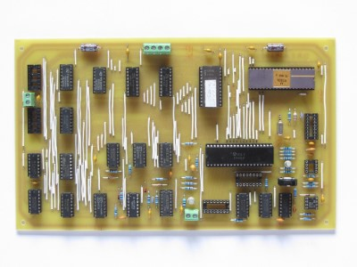
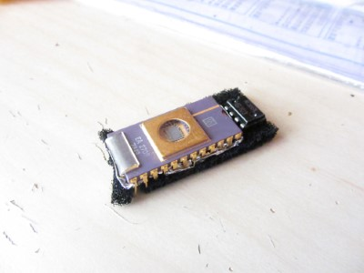
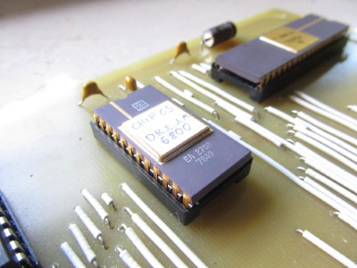
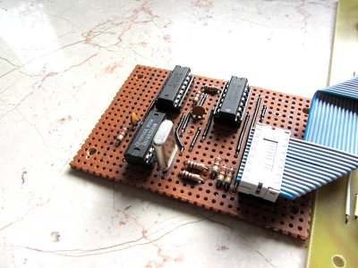

A while ago I got a huge amount of old Chips, including a Ceramic MC6800 CPU. I wanted to build a Computer around this nice looking Chip and decided to recreate the D.R.E.A.M. 6800, published in the magazine "Electronics Australia" in 1979 and designed by Michael Bauer. It is a early single-board-computer with a whopping 2KB(2048 Bytes!) RAM and 1KB ROM programed with CHIP-8. It has a composite video output with a resolution of 64x32 pixels. It uses a hexadecimal keyboard and uses a tape interface to load and store data.

The first thing I had to start with was the Circuit Board. After I looked around a bit, I found two Versions:
The first one was the original layout shown in the EA Article:


the second one was made by David Fry which is a 40th Anniversary Edition of the D.R.E.A.M. 6800 thats mostly identical, only the two 2114 RAM chips were changed to 6116 RAM Chips and the 2708 EPROM was changed to a 2716/2732 EPROM. In order to reduce high production costs of the pcb the whole circuit had been highly compressed onto a double-sided PCB:


I decided that I defently wanted to keep the look of the original circuit boardboard, but because the original pcb had such a bad resolution I first decided to remake the whole board in Kicad. I wanted to keep the original look of the Computer, first because it looks really unique and second because it is only single-sided and therefore "easy" to etch myself. I simply used the schematics of the 40th Anniversary version and simply remade the whole circuit board. Here is the Result of that:


You can download the Kicad files here: DREAM6800.rar
I wasnt pleased with the outcome, not because it looked bad, but because the clearances were a bit tight. Thats why I decided to use the original board design. The quality wasn't very good, but after hours of fiddeling around with image editing software I managed to get a good output. With the help of the Kicad bitmap2component tool I adjusted the size and printed it on transparent paper to etch the circuitboard. If you want to use this design you can find it in the Eco1.User Layer of the DREAM6800.rar project or this pdf file. So I printed the Layout on a transparent paper and me and my Dad now started etching the Board, which cost us a lot of sweat. After two failed attempts I got a really well etched board. Drilling all the holes took some time, but I managed to do that without breaking a single drill! Next step was to mount all the Components. I started with cutting and soldering all the wires to the Board, followed by flat components like resistors and capacitors. IC-sockets and connectors followed.


Now I only had to grab all the Chips and slam them into their sockets and the computer was ready to go. Here is what the finished D.R.E.A.M. 6800 looks like(still missing the NE566 and MC6875):
Thanks to a very kind donation of Michael Bauer I was able to install the missing NE566 and also replace the Intel 2708 with a Electronic Arrays 2708 in Ceramic Package, so it fits perfectly to the CPU. Because the EPROM-Programmer I normally use does not support 2708's, I used my Mostek Computer which features a 2708/2716 EPROM-Programmer for it. I also made the MC6875 substitute circuit to temporarily replace the missing MC6875 clock signal generator chip.
  Now the only thing that still needs to be done in order to power up my D.R.E.A.M. 6800 is to build a powersupply that offers +12V, +5V and -5V. I am currently working on one, and I'll update this page as soon as I finished it.
This page was last modified .